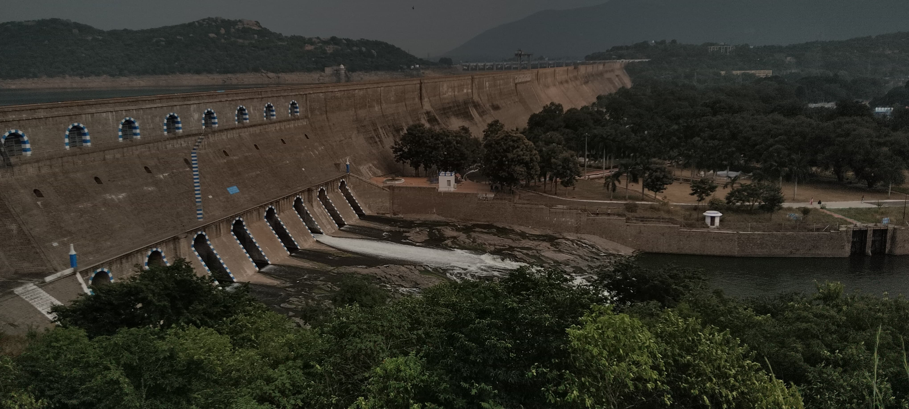
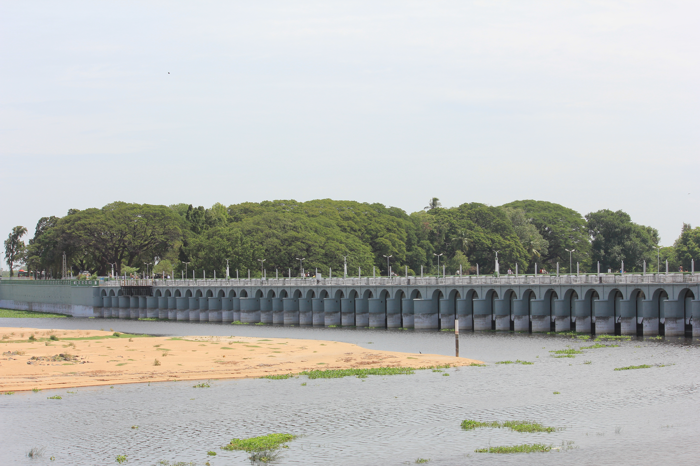
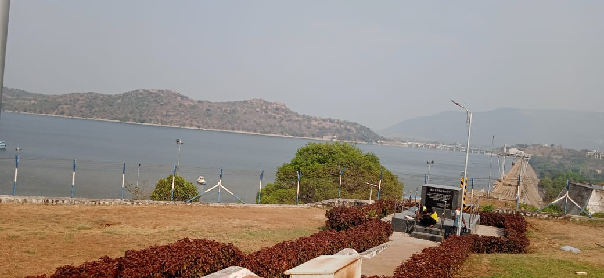
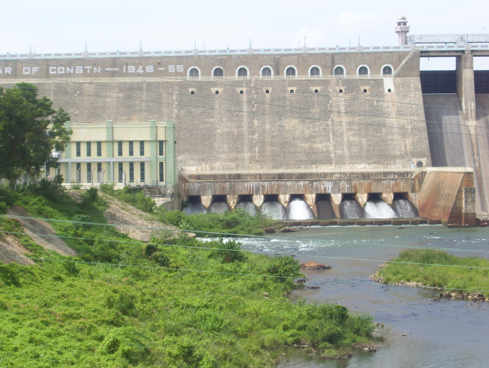
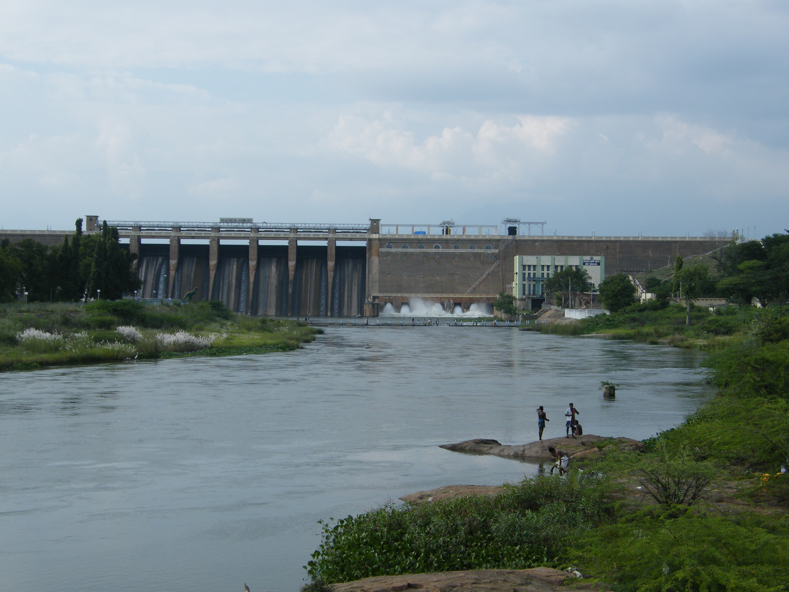
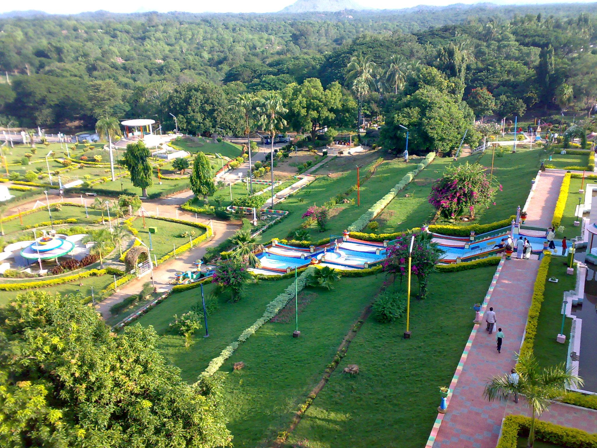
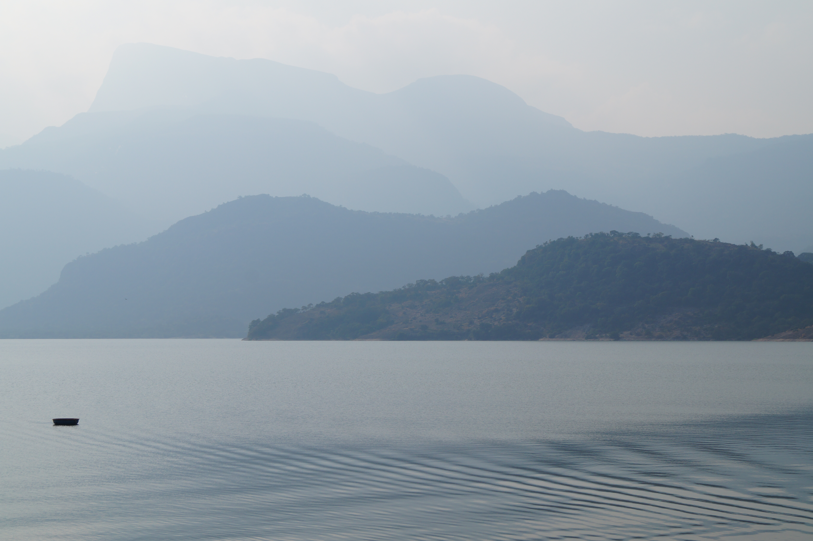
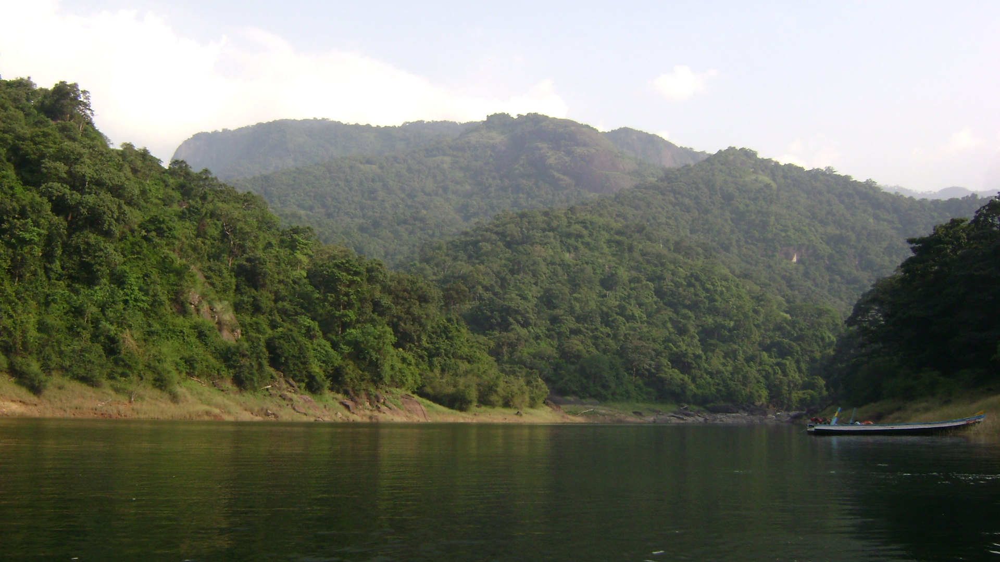

மழைக்காலங்களில் கிடைக்கும் நீரைச் சேமித்து, வறட்சி மற்றும் மழையில்லா காலங்களில் விவசாயம், குடிநீர் மற்றும் பிற தேவைகளுக்குப் பயன்படுத்த உதவும் தமிழ்நாட்டின் முக்கிய அணைகள் பற்றிய அறிமுகம்.
தமிழ்நாடு அரசின் நீர்வளத் தரவுகளில் 16 முக்கிய நீர்த்தேக்கங்கள் தொடர்ந்து கண்காணிக்கப்படுகின்றன — மேட்டூர், பவானிசாகர், அமராவதி, பெரியாறு, வைகை, பாபநாசம், மணிமுத்தாறு, சாத்தனூர், கிருஷ்ணகிரி, சோலையாறு, பரம்பிக்குளம், ஆழியாறு, திருமூர்த்தி உள்ளிட்டவை.
குறிப்பு: "16 முக்கிய நீர்த்தேக்கங்கள்" என்பது அரசு பயன்படுத்தும் ஒரு குறிப்பிட்ட வகைப்பாடு. இது தமிழ்நாட்டில் உள்ள அனைத்து அணைகளின் மொத்த எண்ணிக்கை அல்ல.
மழைக்காலங்களில் ஆறுகளில் கிடைக்கும் அதிகப்படியான நீரைத் தேக்கி வைத்து, தேவையான காலங்களில் பயன்படுத்த உதவுகின்றன.
அணைகளில் சேமிக்கப்பட்ட நீர் கால்வாய்கள் மூலம் விவசாய நிலங்களுக்கு கொண்டு செல்லப்படுகிறது. இதன் மூலம் பல பகுதிகளில் பாசன வசதி கிடைக்கிறது.
அணைகள் மற்றும் நீர்த்தேக்கங்களில் சேமிக்கப்படும் நீர் பல பகுதிகளின் குடிநீர் தேவையைப் பூர்த்தி செய்யப் பயன்படுகிறது.
சில அணைகளில் நீரின் ஓட்டத்தைப் பயன்படுத்தி நீர்மின் உற்பத்தி செய்யப்படுகிறது.
மழைக்காலத்தில் கிடைக்கும் நீரைத் திட்டமிட்டு சேமித்து, மழையில்லா காலங்களில் பயன்படுத்துவதன் மூலம் நீர்வள மேலாண்மைக்கு உதவுகின்றன.

காவிரி ஆற்றின் நீரைப் பிரித்து காவிரி டெல்டா பகுதிகளுக்கு பாசன நீரை வழங்கும் நோக்கில் கட்டப்பட்ட பழமையான நீர்ப்பாசனக் கட்டமைப்பு. இன்றும் காவிரி டெல்டாவின் நீர்ப்பாசன அமைப்பில் முக்கிய பங்கு வகிக்கிறது. தமிழர்களின் தொன்மையான நீர்மேலாண்மை மற்றும் பொறியியல் அறிவின் சிறந்த எடுத்துக்காட்டு.

தமிழ்நாட்டின் மிக முக்கியமான நீர்த்தேக்கங்களில் ஒன்றான மேட்டூர் அணை, காவிரி நீரைச் சேமித்து காவிரி டெல்டா பகுதிகளின் பாசனத்திற்கும் நீர்வள மேலாண்மைக்கும் முக்கிய ஆதாரமாக உள்ளது.

பவானி ஆற்றின் நீரைச் சேமித்து, ஈரோடு மற்றும் சுற்றியுள்ள பகுதிகளின் பாசனத் தேவைகளுக்கு முக்கிய ஆதாரமாக பவானிசாகர் அணை விளங்குகிறது.

தென் தமிழ்நாட்டின் முக்கிய நீர்த்தேக்கங்களில் ஒன்றான வைகை அணை, வைகை ஆற்றின் நீரைச் சேமித்து மதுரை உள்ளிட்ட சுற்றியுள்ள பகுதிகளின் பாசனம் மற்றும் நீர்வளத் தேவைகளுக்கு உதவுகிறது.

தென்பெண்ணையாற்றின் நீரைச் சேமித்து, திருவண்ணாமலை மற்றும் சுற்றியுள்ள பகுதிகளின் பாசனத் தேவைகளுக்கு சாத்தனூர் அணை உதவுகிறது.

அமராவதி ஆற்றின் நீரைச் சேமித்து, சுற்றியுள்ள விவசாயப் பகுதிகளின் பாசனத் தேவைகளுக்கு அமராவதி அணை பயன்படுகிறது.

தாமிரபரணி ஆற்றுப் பகுதியின் நீர்வள மேலாண்மை, பாசனம் மற்றும் நீர்மின் உற்பத்தியில் பாபநாசம் அணை முக்கிய பங்கு வகிக்கிறது.
| அணை | முக்கிய ஆறு | முக்கிய பயன்பாடு |
|---|---|---|
| கல்லணை | காவிரி | பாசனம், நீர்ப்பிரிப்பு |
| மேட்டூர் | காவிரி | பாசனம், குடிநீர், மின்சாரம் |
| பவானிசாகர் | பவானி | பாசனம், நீர்வளம் |
| வைகை | வைகை | பாசனம், குடிநீர் |
| சாத்தனூர் | தென்பெண்ணையாறு | பாசனம் |
| அமராவதி | அமராவதி | பாசனம் |
| பாபநாசம் | தாமிரபரணி | பாசனம், மின்சாரம் |
| மணிமுத்தாறு | மணிமுத்தாறு | பாசனம் |
| பரம்பிக்குளம் | பரம்பிக்குளம் | பாசனம், நீர்வள மேலாண்மை |
| ஆழியாறு | ஆழியாறு | பாசனம் |
| சோலையாறு | சோலையாறு | நீர்வளம், மின்சாரம் |
| திருமூர்த்தி | திருமூர்த்தி | பாசனம் |
| கிருஷ்ணகிரி | தென்பெண்ணையாறு | பாசனம் |